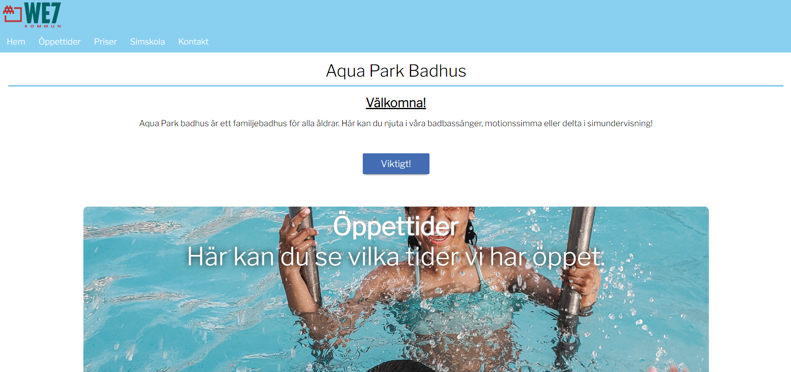
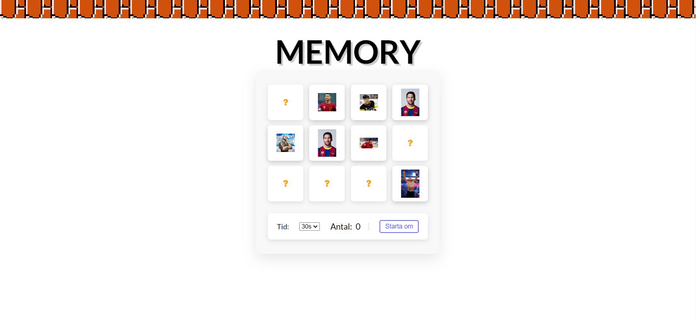
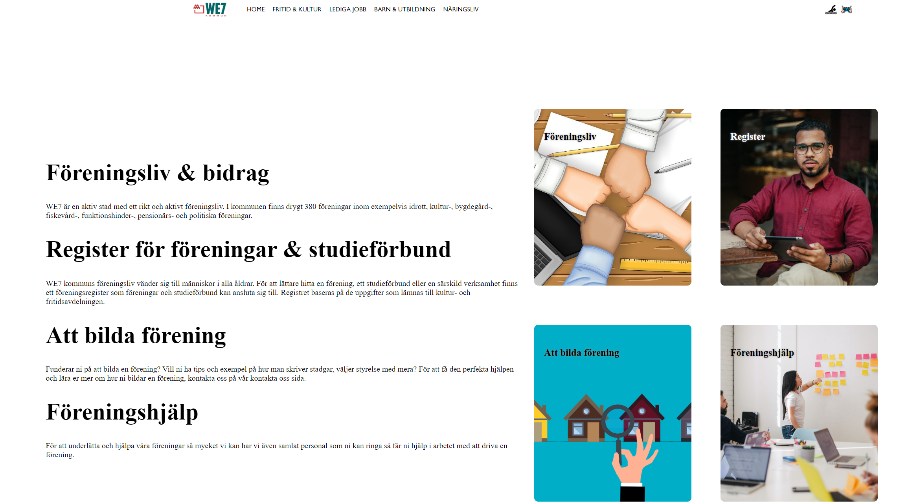
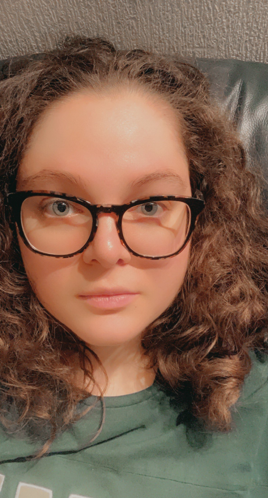

Tillsammans med en fantastisk klasskamrat tog vi oss an utmaningen att skapa en badhus-hemsida för vårt senaste grupp projekt.
Genom att kombinera våra kunskaper i HTML, CSS och JavaScript lyckades vi skapa en interaktiv plattform som inte bara visar badhusets faciliteter utan också bjuder in besökarna till en virtuell upplevelse.
Ett riktigt teamarbete där kreativitet och kodning gick hand i hand! 🏊♂️🖥️ #GroupCoding #HTMLCSSJSProject
I vårt senaste grupp projekt, som också var vår betygsinlämning för HTML och CSS,
tog jag på mig ansvaret att skapa en fängslande fritidsgårdshemsida. Med en kombination av HTML för strukturen, CSS för designen och JavaScript för interaktivitet, lyckades jag skapa en engagerande digital plattform.
Hemsidan erbjuder inte bara information om fritidsgården utan också en interaktiv upplevelse för besökarna. Ett projekt där kreativiteten och kodningens kraft verkligen kom till sin fulla rätt! 🌟💻 #HTMLCSSJSProject #GroupEffort


För min senaste betygsinlämning i JavaScript valde jag att utmana mig själv genom att skapa ett memory-spel från grunden,
enbart med JavaScript. Genom att använda mig av de kraftfulla funktionerna i språket lyckades jag skapa ett interaktivt och underhållande spel.
Resultatet är inte bara ett fungerande projekt, utan också en djupare förståelse för JavaScripts möjligheter. 🃏💡 #JavaScriptChallenge #MemoryGameProject
I vårt senaste gruppprojekt satte jag mig ansvarig för att skapa en engagerande föreningshemsida. Genom att kombinera HTML för strukturen,
CSS för designen och JavaScript för interaktivitet lyckades jag skapa en dynamisk plattform. Medlemmarna kommer att kunna uppleva en sömlös webbupplevelse samtidigt som de utforskar vad föreningen har att erbjuda.
Ett givande projekt där koden verkligen tog liv! 💻🌐 #GroupCoding #HTMLCSSJS


Jag ville utmana mig själv i mitt senaste projekt och skapade en Bibilitok-hemsida enbart med HTML och CSS.
Genom att fokusera på ren kodning och design skapade jag en användarvänlig plattform utan att använda andra programmeringsspråk.
Resultatet är en minimalistisk och stilren hemsida som inte bara möter projektets krav utan även ger mig en kreativ boost! 🚀 #CodingAdventures #HTMLCSSMagic
My name is Dafina Gashi, a 26-year-old with a passion for gaming and coding. When I'm not immersed in the digital realm, you can find me hanging out with friends or indulging in fantasy TV series.
A social butterfly at heart, I thrive on meaningful connections and new adventures. Let's embark on this journey together!
